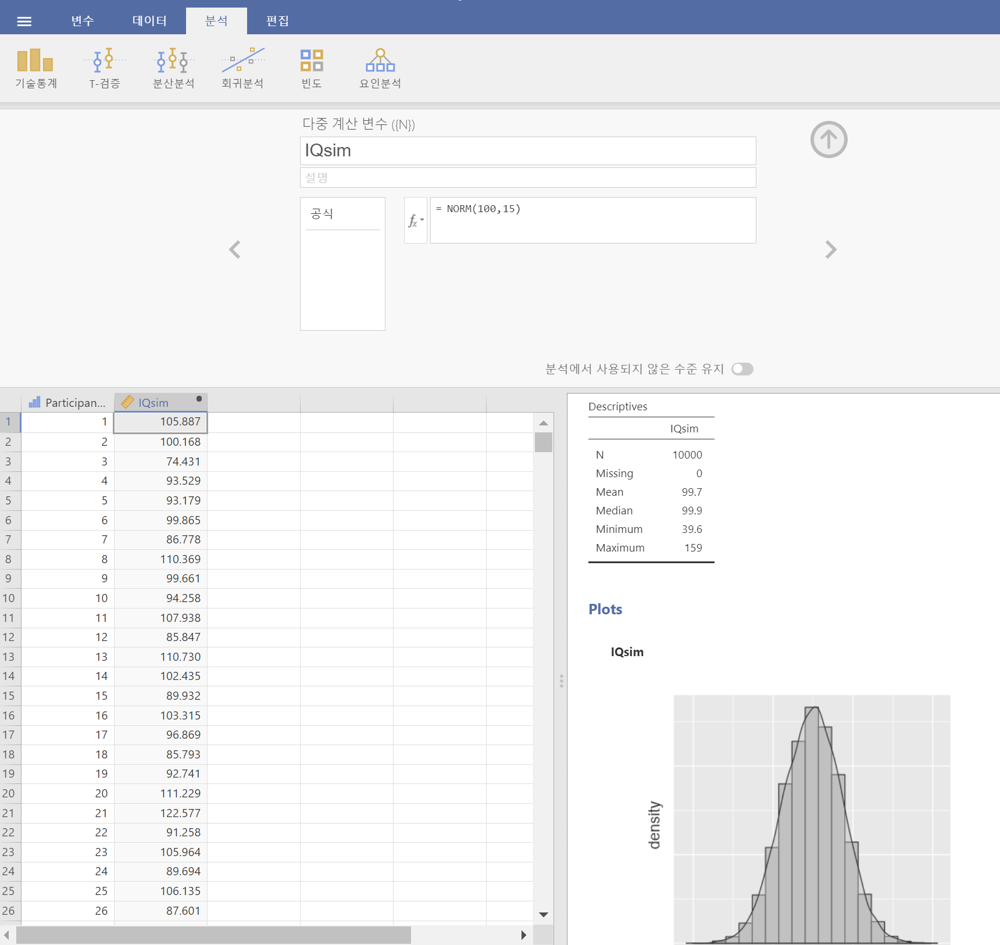

8 표본으로 미지의 모수 추정하기
지난 장의 시작에서 기술 통계(descriptive statistics)와 추론 통계(inferential statistics)의 중요한 차이점을 강조했습니다. Chapter 4 에서 논의한 바와 같이, 기술 통계의 역할은 우리가 알고 있는 것을 간결하게 요약하는 것입니다. 이에 반해, 추론 통계의 목적은 “우리가 알고 있지 않은 것을, 우리가 알고 있는 것으로부터 학습하는 것”입다. 이제 우리는 확률 이론에 대한 기초를 갖추었으므로, 통계적 추론의 문제에 대해 생각해 볼 만 합니다. 우리는 어떤 종류의 정보를 알고자 하는가? 그리고 그것을 어떻게 알 수 있는가? 이러한 질문들이 추론 통계의 핵심을 이루며, 추론 통계는 전통적으로 두 가지 “큰 개념”인 추정(estimation)과 가설 검정(hypothesis testing)으로 나뉜다. 이번 장에서는 이 두 가지 개념 중 첫 번째인 추정 이론(estimation theory)을 소개하는 것이 목표이지만, 추정 이론을 이해하려면 먼저 표본 이론(sampling theory)을 알아야 한다. 따라서, 이 장은 자연스럽게 두 부분으로 나뉜다. 처음 세 개의 절은 표본 이론에 초점을 맞추고 있으며, 마지막 두 개의 절에서는 표본 이론을 활용하여 통계학자들이 추정을 어떻게 생각하는지를 논의할 것이다.
8.1 표본, 모집단 및 표본추출
IV 부의 서두에서 귀납적 추론의 수수께끼를 논의하며, 모든 새로운 사실에 대한 학습은 가정을 필요로 한다는 것을 강조한 바 있다. 이것을 진실이라고 받아들인다면, 우리의 첫 번째 과제는 데이터에 대해 몇 가지 일반적인 가정을 세우는 것이다. 여기서 표본 이론(sampling theory)이 등장하게 된다. 확률 이론이 모든 통계 이론을 구축하는 기초라면, 표본 이론은 그 위에 집을 세울 수 있는 틀이라 할 수 있다. 표본 이론은 통계적 추론이 의존하는 가정을 명시하는 데 중요한 역할을 한다. 그리고 통계학자들이 생각하는 방식으로 “추론을 수행하는 것”에 대해 이야기하려면, 우리가 무엇으로부터 추론을 도출하는지(즉, 표본)와 무엇에 대해 추론을 도출하는지(즉, 모집단)를 보다 명확하게 정의할 필요가 있다.
대부분의 연구 상황에서 연구자가 이용할 수 있는 것은 표본(sample) 데이터이다. 실험을 수행하여 일정 수의 참가자를 모집할 수도 있고, 여론 조사 기관이 일정 수의 사람들에게 전화를 걸어 투표 의향을 물을 수도 있다. 이러한 방식으로 우리가 확보할 수 있는 데이터 세트는 유한하며 불완전하다. 예를 들어, 실험에 모든 사람을 참여시키는 것은 불가능하며, 여론 조사 기관은 국가의 모든 유권자에게 전화를 걸 시간과 비용을 감당할 수도 없다. Chapter 4 에서 기술 통계를 논의할 때, 우리가 관심을 가진 대상은 오직 표본뿐이었다. 우리의 유일한 목표는 해당 표본을 기술하고, 요약하며, 그래프로 나타내는 방법을 찾는 것이었다. 하지만 이제부터는 상황이 달라질 것이다.
8.1.1 모집단 정의하기
표본은 구체적인 개념입니다. 데이터 파일을 열어 보면 거기에 표본에서 얻은 데이터가 들어 있습니다. 반면, 모집단(population)은 더 추상적인 개념입니다. 모집단은 연구자가 결론을 내리고자 하는 모든 가능한 사람들 또는 모든 가능한 관측치를 포함하는 집합을 의미하며, 일반적으로 표본보다 훨씬 더 큽니다. 이상적인 상황에서는 연구자가 연구를 시작할 때 관심 있는 모집단이 무엇인지 명확하게 정의하는 것이 바람직합니다. 연구 설계 및 데이터로 가설을 검증하는 과정은 연구자가 진술하고자 하는 모집단에 따라 달라지기 때문입니다.
어떤 경우에는 관심 있는 모집단을 명확하게 정의하기가 쉽습니다. 예를 들어, 이 장의 서두에서 언급한 “여론 조사 기관” 예시에서 모집단은 연구 시점에 등록된 모든 유권자들로 이루어지며, 이는 수백만 명에 이릅니다. 표본은 그 모집단에 속하는 1000명의 사람들로 구성됩니다. 그러나 대부분의 연구에서는 상황이 훨씬 더 복잡합니다. 일반적인 심리학 실험에서 관심 있는 모집단을 결정하는 것은 다소 까다로울 수 있습니다. 예를 들어, 100명의 학부생을 실험 참가자로 모집하여 실험을 수행한다고 가정해 봅시다. 인지 과학자로서 나는 인간의 정신이 어떻게 작동하는지에 대해 알고자 합니다. 그렇다면 다음 중 무엇이 “모집단”에 해당할까요?
- 애들레이드 대학교의 학부 심리학 학생 전원?
- 전 세계의 학부 심리학 학생들?
- 현재 살아 있는 호주인들?
- 표본과 비슷한 연령대의 호주인들?
- 현재 살아 있는 모든 사람들?
- 과거, 현재, 미래의 모든 인간들?
- 모든 지적 존재들?
각 항목은 실제로 정신을 소유한 존재들의 집단을 정의하며, 인지 과학자로서 나에게 모두 흥미로운 대상이 될 수 있습니다. 그러나 이들 중 어떤 집단이 진정한 관심 모집단이어야 하는지는 명확하지 않습니다. 또 다른 예로, IV 부의 서두에서 논의했던 웰즐리-크로커 게임을 고려해 봅시다. 여기에서 표본은 웰즐리가 12번 연속 승리하고 0번 패배한 특정한 게임 결과의 순서를 의미합니다. 그렇다면 모집단은 무엇일까요? 앞의 예와 마찬가지로, 모집단이 무엇인지 명확하지 않습니다.
- 웰즐리와 크로커가 목적지에 도착할 때까지의 모든 게임 결과?
- 웰즐리와 크로커가 평생 동안 게임을 계속했을 경우의 모든 결과?
- 웰즐리와 크로커가 영원히 살아남아 세상의 언덕이 다 사라질 때까지 게임을 계속했을 경우의 모든 결과?
- 무한한 평행 우주를 생성하고, 각 평행 우주의 웰즐리/크로커가 동일한 12개의 언덕에 대해 추측을 했을 경우의 모든 결과?
8.1.2 단순 무작위 표본
모집단을 어떻게 정의하든 간에 중요한 점은 표본이 모집단의 부분집합이며, 우리가 가진 표본을 이용해 모집단의 특성을 추론하는 것이 목표라는 것입니다. 표본과 모집단 사이의 관계는 표본이 선택된 방식, 즉 표본추출 방법(sampling method)에 따라 달라지며, 이 과정이 중요한 이유를 이해하는 것이 필수적입니다.
간단한 예를 들어봅시다. 10개의 칩(chips)이 들어 있는 주머니가 있다고 가정합시다. 각 칩에는 고유한 문자가 인쇄되어 있어 구별할 수 있으며, 칩의 색깔은 검은색과 흰색 두 가지입니다. 이 칩들의 집합이 우리가 관심을 두는 모집단이며, 이는 Figure 8.1 의 왼쪽 그림에 표현되 있습니다. 그림에서 볼 수 있듯이, 검은색 칩이 4개, 흰색 칩이 6개 있지만, 실제로 실험을 수행할 때 주머니 안을 들여다보지 않는 한 이를 알 수는 없습니다. 이제 다음과 같은 “실험”을 진행한다고 가정합시다. 주머니를 흔든 후 눈을 감고 칩 4개를 꺼내되, 꺼낸 칩을 다시 주머니에 넣지 않습니다. 첫 번째로 나온 칩은 \(a\)(검은색), 그다음은 \(c\)(흰색), 그다음은 \(j\)(흰색), 마지막으로 \(b\)(검은색)이었습니다. 이후 모든 칩을 다시 주머니에 넣고 같은 실험을 반복할 수 있으며, 이는 Figure 8.1 오른쪽에 표현되어 있습니다. 실험을 반복할 때마다 결과가 다르게 나타날 수 있지만, 과정 자체는 동일합니다. 이렇게 같은 과정이 반복될 때마다 다른 결과가 나올 수 있는 경우를 확률 과정(random process)이라고 합니다.1 그러나 주머니를 흔든 후 칩을 선택했으므로 모든 칩이 동일한 확률로 선택될 가능성이 높다고 생각할 수 있습니다. 모집단 내 모든 구성원이 동일한 확률로 선택될 수 있는 표본추출 절차를 단순 무작위 표본추출(simple random sample)이라고 합니다. 또한, 칩을 꺼낸 후 다시 주머니에 넣지 않았기 때문에 같은 칩을 표본에서 두 번 관찰할 수 없으며, 이러한 경우를 비복원 표본추출(sampling without replacement)이라고 합니다.

표본추출 절차의 중요성을 이해하기 위해 다른 실험 방식을 고려해 봅시다. 만약 다섯 살짜리 아이가 주머니를 열고 검은색 칩 4개를 골라내며, 꺼낸 칩을 다시 넣지 않는 방식으로 진행했다면 어떻게 될까요? 이러한 편향된 표본추출 방식은 Figure 8.2 에 표현되어 있습니다. 이제 4개의 검은색 칩이 선택되고 흰색 칩이 하나도 선택되지 않았다는 사건이 갖는 증거로서의 가치를 생각해 봅시다. 이는 표본추출 방식에 따라 다르지 않을까요? 만약 특정 색깔의 칩만 선택하도록 편향된 표본추출한 방식이라면, 검은색 칩만 포함된 표본이 모집단에 대해 제공하는 정보는 매우 제한적일 것입니다. 이러한 이유로 통계학자들은 데이터가 단순 무작위 표본일 때를 선호합니다. 이렇게 하면 데이터 분석이 훨씬 쉬워지기 때문입니다.
또 다른 표본추출 방법도 고려할 가치가 있습니다. 이번에는 눈을 감고 주머니를 흔든 후 칩을 하나 꺼냅니다. 그러나 이번에는 관측값을 기록한 후 칩을 다시 주머니에 넣고 같은 과정을 반복하여 4개의 칩을 선택합니다. 이처럼 선택한 항목을 다시 모집단에 포함시키는 방식을 복원 표본추출(sampling with replacement)이라고 합니다. 이 방식에서는 동일한 모집단 항목이 여러 번 관찰될 가능성이 있으며, 이는 Figure 8.3 에서 설명되어 있습니다.
내 경험에 따르면 대부분의 심리학 실험은 비복원 표본추출 방식을 따릅니다. 왜냐하면 같은 사람이 두 번 실험에 참여하는 것이 허용되지 않기 때문입니다. 그러나 대부분의 통계 이론은 복원 표본추출을 가정하여 개발됩니다. 하지만 현실에서는 이 차이가 거의 문제가 되지 않습니다. 모집단이 충분히 클 경우(예: 10개 이상의 개체가 존재할 경우)2 복원 표본추출과 비복원 표본추출 간의 차이는 무시할 수 있을 정도로 작기 때문입니다. 반면, 단순 무작위 표본과 편향된 표본 간의 차이는 간과하기 어려운 차이를 가집니다.
8.1.3 대부분의 표본은 단순 무작위 표본이 아니다
위에서 제시한 가능한 모집단 목록을 보면 알 수 있듯이, 우리가 관심을 갖는 대부분의 모집단에서 단순 무작위 표본을 얻는 것은 거의 불가능합니다. 내가 실험을 진행할 때, 참가자가 애들레이드 대학교의 학부 심리학 학생들 중에서 무작위로 표본추출되었다면, 그것만으로도 작은 기적이라고 생각할 것입니다. 이는 내가 일반화하고 싶은 모집단 중에서 가장 좁은 범주임에도 그렇습니다. 다른 유형의 표본추출 방법에 대한 자세한 논의는 이 책의 범위를 벗어나지만, 대략적인 개념을 제공하기 위해 몇 가지 중요한 방법을 소개하겠습니다.
층화 표본추출(stratified sampling): 모집단이 여러 개의 하위 모집단(층)으로 나뉘어 있거나 나눌 수 있다고 가정해 봅시다. 예를 들어, 여러 다른 지역에서 연구를 진행할 수도 있습니다. 모집단 전체에서 무작위로 표본을 추출하는 대신, 각 층에서 별도로 무작위 표본을 수집하는 방식을 사용할 수도 있습니다. 층화 표본추출은 모집단이 이미 명확한 층으로 나누어져 있을 경우 단순 무작위 표본추출보다 더 쉽고, 특히 희귀한 하위 모집단을 포함하고 있을 때 더 효율적일 수 있습니다. 예를 들어, 조현병을 연구할 때 모집단을 두 개의 층(조현병 환자와 비(非)조현병 환자)으로 나누고, 각 그룹에서 동일한 수의 사람을 표본으로 추출하는 것이 훨씬 더 나은 방법일 것입니다. 무작위로 사람을 선택하면 조현병 환자가 표본에 거의 포함되지 않아 연구가 무의미해질 수도 있습니다. 이러한 특정한 층화 표본추출 방식을 과표집(oversampling)이라고 하며, 희귀한 그룹을 의도적으로 더 많이 포함하도록 하는 기법입니다.3
눈덩이 표본추출(snowball sampling): “숨겨진” 또는 접근하기 어려운 모집단에서 표본을 추출할 때 유용한 기법이며, 특히 사회과학에서 흔히 사용됩니다. 예를 들어, 연구자가 트랜스젠더 집단을 대상으로 여론 조사를 하고 싶다고 가정해 봅시다. 연구팀이 처음에는 소수의 트랜스젠더 참여자에 대한 연락처만 가지고 있을 수 있습니다. 따라서 연구는 우선 이들에게 설문에 참여해 달라고 요청하는 것으로 시작됩니다(1단계). 설문이 끝난 후, 연구자는 이들에게 추가로 참여할 만한 다른 사람들의 연락처를 제공해 달라고 요청합니다. 이렇게 확보된 새로운 연락처를 대상으로 2단계 조사가 진행됩니다. 이러한 과정이 반복되면서 연구자는 충분한 데이터를 확보하게 됩니다. 눈덩이 표본추출의 가장 큰 장점은 일반적으로 데이터를 확보하기 어려운 상황에서도 표본을 얻을 수 있다는 점입니다. 그러나 통계적으로는 표본이 매우 비무작위적이며, 그 비무작위성이 어떻게 작용하는지 파악하기 어렵다는 단점이 있습니다. 또한 현실적인 문제도 있습니다. 모집단이 “숨겨진” 이유가 있는 경우가 많기 때문에, 이 방법을 잘못 사용할 경우 비윤리적인 결과를 초래할 수 있습니다. 여기서 트랜스젠더 집단을 예로 든 이유도 이와 관련이 있습니다. 연구자가 조심하지 않으면, 원치 않는 사람을 아웃팅(outing)하게 될 수도 있으며(이는 매우 심각한 실수입니다), 그런 실수를 하지 않더라도 사람들의 사회적 네트워크를 연구 목적으로 이용하는 것이 사생활 침해로 느껴질 수 있습니다. 무엇보다, 연구자가 사람들에게 연락을 취하기 전에 미리 동의를 얻는 것이 어렵다는 점도 문제입니다. 때로는 단순히 “우리가 당신을 연구하고 싶다”는 의도를 밝히는 것만으로도 상처를 줄 수 있습니다. 사회적 네트워크는 복잡한 구조를 가지고 있으며, 사회적 네트워크로 데이터를 수집할 수 있다고 해서 그렇게 하는 것이 좋은 것은 아닐 수 있다는 것을 기억해야 합니다.
편의 표본추출(convenience sampling): 말 그대로 연구자에게 편리한 방식으로 표본을 선택하는 방법이며, 모집단에서 무작위로 선택하는 것은 아닙니다. 눈덩이 표본추출도 편의 표본추출의 한 형태이지만, 이 외에도 다양한 방식이 존재합니다. 심리학 연구에서 흔히 볼 수 있는 예로, 학부 심리학 학생들을 대상으로 한 연구를 들 수 있습니다. 이러한 표본은 일반적으로 두 가지 측면에서 비무작위적입니다. 첫째, 학부 심리학 학생들을 대상으로 한다는 것 자체가 특정 하위 모집단에 국한된다는 점입니다. 둘째, 학생들이 어떤 연구에 참여할지를 직접 선택하는 경우가 많기 때문에, 이는 심리학 학생들 전체에서 무작위로 선택된 하위 집단이 아니라 자발적으로 참여한 일부 집단이라는 점에서 더욱 비무작위적입니다. 현실적으로 보면, 대부분의 연구는 어느 정도 편의 표본추출에 의존합니다. 이는 연구의 중요한 한계가 될 수도 있지만, 반드시 그렇지만은 않습니다.
8.1.4 단순 무작위 표본이 아니면 얼마나 문제가 될까?
현실에서 데이터를 수집할 때는 대부분 단순 무작위 표본을 사용하지 않습니다. 그렇다면 이것이 문제가 될까요? 조금만 생각해 보면, 데이터가 단순 무작위 표본이 아닐 경우 문제가 될 수 있다는 점이 명확해집니다. Figure 8.1 과 Figure 8.2 의 차이를 생각해 보면 됩니다. 하지만 걱정할 만큼 나쁜 상황은 아닙니다. 일부 유형의 편향된 표본은 전혀 문제가 되지 않습니다. 예를 들어, 층화 표본추출 기법을 사용할 경우 연구자가 의도적으로 편향을 만들었으며, 이는 종종 연구의 효과를 높이기 위한 것입니다. 또한, 이러한 경우에는 연구자가 만든 편향을 보정할 수 있는 통계적 기법도 존재합니다(이 책에서는 다루지 않지만!). 따라서 이러한 상황에서는 문제가 되지 않습니다.
보다 일반적으로 보았을 때, 무작위 표본추출은 수단이지 목적이 아니라는 점을 기억하는 것이 중요합니다. 편의 표본에 의존했다고 가정해 봅시다. 그렇다면 표본이 편향되었을 가능성이 큽니다. 하지만 표본추출 과정에서 편향이 발생했다고 해서 반드시 문제가 되는 것은 아닙니다. 문제가 되는 경우는 그 편향이 잘못된 결론을 내리게 만드는 경우뿐입니다. 이런 관점에서 본다면, 표본이 모든 면에서 무작위적일 필요는 없으며, 연구에서 관심을 두고 있는 심리학적 현상과 관련하여 무작위적이면 충분합니다.
예를 들어, 내가 작업 기억 용량(working memory capacity)에 대한 연구를 진행한다고 가정해 봅시다. 연구 1에서는 현재 살아 있는 모든 인간을 대상으로 무작위 표본을 추출할 수 있는 능력을 갖고 있지만, 한 가지 예외가 있습니다. 월요일에 태어난 사람만 표본으로 선택할 수 있습니다. 연구 2에서는 호주 인구에서 무작위로 표본을 추출할 수 있습니다. 나는 연구 결과를 전 세계 모든 인간에게 일반화하고 싶습니다. 그렇다면 어느 연구가 더 나을까요? 당연히 연구 1입니다. 왜일까? “월요일에 태어났다”는 것이 작업 기억 용량과 관련이 있을 이유가 전혀 없기 때문입니다. 반면, “호주에서 태어났다”는 것은 다를 수 있습니다. 호주는 부유한 산업국이며, 매우 잘 발달된 교육 시스템을 갖추고 있습니다. 이 시스템에서 성장한 사람들은 작업 기억 용량을 측정하는 테스트를 설계한 사람들과 훨씬 더 유사한 삶의 경험을 공유했을 가능성이 높습니다. 이러한 공통된 경험은 테스트를 어떻게 수행해야 하는지에 대한 유사한 신념을 형성할 수도 있고, 심리학 실험이 어떻게 진행되는지에 대한 공통된 가정을 만들 수도 있습니다. 이런 요소들은 실제로 중요한 영향을 미칠 수 있습니다. 예를 들어, “시험 방식”이 호주 참가자들에게 보다 추상적인 시험 자료에 집중하는 법을 가르쳤을 수도 있습니다. 반면, 유사한 환경에서 성장하지 않은 사람들은 이러한 방식에 익숙하지 않을 수 있습니다. 따라서 이런 편향된 표본이 작업 기억 용량에 대한 잘못된 판단을 하게 만들 수도 있습니다.
이 논의에서 두 가지 중요한 점을 짚어볼 수 있습니다. 첫째, 연구를 설계할 때 어떤 모집단을 연구 대상으로 삼을 것인지 신중하게 생각하고, 그 모집단에 적합한 방식으로 표본을 추출하려고 노력해야 합니다. 현실적으로는 대부분 “편의 표본”을 사용할 수밖에 없는 경우가 많습니다(예: 심리학 교수들이 심리학 학생들을 대상으로 연구를 수행하는 이유는 비용이 가장 적게 들기 때문이며, 학계의 예산은 풍족하지 않습니다). 하지만 그렇다고 해도, 이러한 방법이 초래할 위험이 무엇인지에 대해 고민하는 것이 필요합니다. 둘째, 다른 연구자의 연구를 비판할 때, 단순히 그들이 편의 표본을 사용했다고 해서 비판하는 것은 적절하지 않습니다. 만약 연구 결과가 왜곡되었을 가능성이 있다고 주장하려면, 최소한 그 편향이 결과에 어떤 영향을 미쳤을지에 대한 구체적인 이론을 제시하는 것이 예의일 것입니다.
작업 기억이란
작업 기억(working memory)는 정보를 짧은 시간 동안 일시적으로 저장하고 조작하는 능력을 말합니다. 이는 우리가 복잡한 인지 작업을 수행할 때 필수적인 역할을 합니다. 예를 들어, 문제 해결, 의사 결정, 언어 이해, 계산 등의 과정에서 작업 기억이 활발하게 사용됩니다.
작업 기억의 주요 특징은 다음과 같습니다.
- 일시적 저장: 정보를 짧은 시간 동안만 유지합니다. (몇 초에서 수십 초 정도)
- 정보 조작: 단순히 저장하는 것뿐만 아니라 그 정보를 활용하거나 변형할 수 있습니다.
- 제한된 용량: 한 번에 처리할 수 있는 정보의 양이 제한되어 있습니다. (보통 7±2 개의 항목이라고 알려짐)
작업 기억의 구성 요소에 대한 Baddeley & Hitch 자신의 모형에서 다음과 같이 설명합니다.
- 중앙 집행기(Central Executive):
- 작업 기억의 컨트롤 타워 역할을 합니다.
- 주의 집중, 정보 전환, 억제 등을 관리합니다.
- 작업 기억의 컨트롤 타워 역할을 합니다.
- 음운 루프(Phonological Loop):
- 언어적 정보(단어, 숫자 등)를 처리하고 유지합니다.
- 예: 전화번호를 머릿속으로 반복하며 기억하기.
- 언어적 정보(단어, 숫자 등)를 처리하고 유지합니다.
- 시공간 스케치패드(Visuospatial Sketchpad):
- 시각적 및 공간적 정보를 처리합니다.
- 예: 지도를 떠올리며 길 찾기.
- 시각적 및 공간적 정보를 처리합니다.
- 에피소드 버퍼(Episodic Buffer):
- 여러 종류의 정보를 통합하고 장기 기억과 연결합니다.
작업 기억이 사용되는 작업의 예는 다음과 같습니다.
- 암산하기: 37 + 48을 머릿속으로 계산할 때, 숫자들을 기억하고 더하는 과정을 조작합니다.
- 지시 따르기: “왼쪽으로 가서 두 번째 문을 열어”라는 지시를 듣고 행동하기.
- 문장 이해하기: 긴 문장을 읽으면서 앞 문장의 내용을 기억하고 연결하기.
작업 기억과 단기 기억의 차이는 다음과 같습니다.
- 단기 기억: 정보를 단순히 잠시 저장하는 것에 초점.
- 작업 기억: 저장뿐만 아니라 정보를 활발히 조작하는 것이 특징.
이해하기 쉽게 말하면, 단기 기억은 정보를 “메모”하는 종이 쪽지이고, 작업 기억은 그 쪽지를 보면서 “계산하거나 생각하는 작업 공간”이라고 볼 수 있습니다.
8.1.5 모집단 모수와 표본 통계량
이제, 무작위 표본을 얻는 과정에서 발생하는 까다로운 방법론적 문제를 잠시 제쳐두고, 약간 다른 문제를 고려해 봅시다. 지금까지 우리는 과학자가 모집단을 바라보는 방식에 대해 이야기했습니다. 심리학자에게 모집단은 사람들의 집단일 수 있고, 생태학자에게 모집단은 곰들의 집단일 수 있습니다. 대부분의 경우, 과학자들이 관심을 가지는 모집단은 실제 세계에 존재하는 구체적인 것들입니다. 그러나 통계학자들은 다소 독특한 사고방식을 가집니다. 한편으로는 과학자들처럼 현실 세계의 데이터와 과학에 관심이 있지만, 다른 한편으로는 수학자들처럼 순수한 추상적 개념을 다루기도 합니다. 그 결과, 통계 이론에서는 모집단을 다소 추상적으로 정의하는 경향이 있습니다. 심리학 연구자들이 추상적인 이론적 개념을 구체적인 측정값으로 조작적으로 정의하듯이(Section 2.1), 통계학자들도 모집단 개념을 자신들이 다룰 수 있는 수학적 객체로 조작적으로 정의합니다. 여러분은 이 조작적 객체를 이미 Chapter 7 에서 보았습니다. 바로 확률분포(probability distributions)입니다.
개념은 비교적 간단합니다. 예를 들어, 우리가 IQ 점수에 대해 논의한다고 가정해 봅시다. 심리학자에게 모집단은 IQ 점수를 가진 실제 인간 집단입니다. 그러나 통계학자는 이를 보다 단순하게 만들어 Figure 8.4 (a)에서 나타난 확률분포로 조작적으로 정의합니다. IQ 테스트는 평균 IQ가 100이고, 표준 편차가 15이며, IQ 점수 분포가 정규 분포를 따르도록 설계됩니다. 이러한 값들을 모집단 모수(population parameters)라고 하며, 이는 모집단 전체의 특성을 나타냅니다. 즉, 모집단의 평균 ()는 100이고, 모집단의 표준 편차 ()는 15라고 말할 수 있습니다.
이제, 실험을 수행한다고 가정해 봅니다. 나는 무작위로 100명을 선택하여 IQ 테스트를 실시하고, 이를 통해 모집단에서 단순 무작위 표본을 얻습니다. 내 표본은 다음과 같은 숫자들로 구성될 것입니다.
106 101 98 80 74 … 107 72 100
각각의 IQ 점수는 평균이 100이고 표준 편차가 15인 정규 분포에서 추출된 값입니다. 따라서 표본의 히스토그램을 그려보면 Figure 8.4 (b)와 같은 모양이 됩니다. 보시다시피, 히스토그램의 형태는 모집단 분포(Figure 8.4 (a) 참조)와 대체로 유사하지만, 여전히 매우 조잡한 근사값에 불과합니다. 표본의 평균을 계산하면 모집단 평균인 100에 가까운 값을 얻을 수 있지만, 정확히 동일하지는 않습니다. 이 경우, 내 표본에 포함된 사람들의 평균 IQ는 98.5이고, 표준 편차는 15.9로 나타났습니다. 이러한 값들을 표본 통계량(sample statistics)이라고 하며, 이는 내 데이터 집합의 특성을 나타냅니다. 표본 통계량은 모집단의 실제 값과 유사하지만 동일하지는 않습니다. 일반적으로, 표본 통계량은 우리가 데이터에서 직접 계산할 수 있는 값이며, 모집단 모수는 우리가 알아내고자 하는 대상입니다.
이 장의 뒷부분에서, [모집단 모수 추정]을 위해 표본 통계량을 사용하는 방법과 신뢰구간 추정에 대해 논의할 것입니다. 하지만 그 전에 표본 이론(sampling theory)에서 더 알아야 할 몇 가지 개념이 남아 있습니다.
8.2 대수의 법칙
이전 절에서 표본 크기가 \(N = 100\)인 가상의 IQ 실험 결과를 보여주었습니다. 실제 모집단 평균이 100이고 표본 평균이 98.5인 것을 보면, 이는 비교적 정확한 추정치임을 알 수 있습니다. 많은 과학 연구에서 이 정도의 정밀도는 충분히 받아들일 수 있지만, 어떤 경우에는 훨씬 더 정밀한 결과가 필요합니다. 그렇다면 표본 통계량을 모집단 모수에 더 가깝게 만들려면 어떻게 해야 할까요? 가장 명백한 해결책은 더 많은 데이터를 수집하는 것입니다. 이제 10,000명의 IQ를 측정하는 훨씬 더 큰 실험을 수행했다고 가정해 봅시다. 우리는 jamovi를 사용하여 이 실험의 결과를 시뮬레이션할 수 있습니다. IQsim.omv 파일은 jamovi 데이터 파일로, 평균이 100이고 표준 편차가 15인 모집단에서 정규 분포를 따르는 10,000개의 난수를 생성한 것입니다. 이 작업은 jamovi의 ‘= NORM(100,15)’ 함수를 사용하여 새로운 변수를 계산함으로써 수행되었습니다. Figure 8.5 의 히스토그램과 밀도 그래프를 보면, 더 큰 표본이 모집단의 실제 분포를 더 잘 반영한다는 것을 확인할 수 있습니다. 이는 표본 통계량에도 반영됩니다. 더 큰 표본에서 얻은 평균 IQ는 99.68, 표준 편차는 14.90으로, 이제 모집단의 실제 값과 매우 가까워졌습니다.

이 말을 하는 것이 조금 부질없게 느껴지지만, 여러분이 반드시 기억해야 할 것은 표본 크기가 클수록 더 좋은 정보를 얻을 수 있다는 점입니다. 사실 이 점은 너무나도 명백해서 굳이 언급할 필요도 없어 보입니다. 실제로 확률론의 창시자 중 한 명인 야코프 베르누이는 1713년에 이 개념을 공식화하면서 다소 거만한 태도를 보였습니다. 그는 다음과 같이 설명했습니다.
“가장 어리석은 사람조차도 어떤 본능적인 직관에 의해, 그리고 별다른 가르침 없이도(이는 주목할 만한 점이다), 더 많은 관찰이 이루어질수록 목표에서 벗어날 위험이 줄어든다는 것을 확신하게 된다.” (Stigler, 1986, p. 65)
이 문장은 다소 무례하게 들릴 수도 있고(게다가 성차별적인 느낌도 있습니다), 하지만 그의 핵심 주장 자체는 맞습니다. 우리는 본능적으로 더 많은 데이터가 더 나은 결과를 가져온다는 사실을 이해하고 있습니다. 그렇다면, 왜 그런 걸까요? 놀랍지 않게도, 우리가 공유하는 이 직관은 정확하며, 통계학자들은 이를 대수의 법칙(law of large numbers)이라고 부릅니다. 대수의 법칙은 여러 가지 표본 통계량에 적용되는 수학적 법칙이지만, 가장 쉽게 이해할 수 있는 방식은 이를 평균에 대한 법칙으로 보는 것입니다. 표본 평균은 평균을 계산하는 과정(즉, 여러 값의 평균을 구하는 것)에서 비롯되는 통계량이므로, 이를 통해 대수의 법칙을 살펴보겠습니다. 대수의 법칙이 표본 평균에 적용될 때, 이 법칙은 다음과 같이 말합니다. 표본 크기가 커질수록 표본 평균은 모집단 평균에 점점 더 가까워진다는 것입니다. 보다 정확히 표현하면, 표본 크기가 무한대로 증가할 때(\(N \longrightarrow \infty\)), 표본 평균은 모집단 평균에 수렴합니다(\(\bar{X} \longrightarrow \mu\))4.
대수의 법칙이 참이라는 것을 증명할 생각은 없지만, 이는 통계 이론에서 가장 중요한 도구 중 하나입니다. 대수의 법칙은 우리가 점점 더 많은 데이터를 수집하면 결국 진실에 가까워질 것이라는 믿음을 정당화하는 근거가 됩니다. 어떤 특정한 데이터 집합에서 계산된 표본 통계량이 완벽히 정확할 가능성은 낮지만, 대수의 법칙에 따르면 더 많은 데이터를 수집할수록 표본 통계량은 점점 모집단 모수에 가까워지게 됩니다.
8.3 표본 분포와 중심극한정리
대수의 법칙은 매우 강력한 도구이지만, 우리의 모든 질문에 답해줄 수는 없습니다. 이 법칙이 제공하는 것은 기본적으로 “장기적인 보장”일 뿐입니다. 즉, 우리가 무한한 양의 데이터를 수집할 수 있다고 가정하면, 대수의 법칙은 우리가 구한 표본 통계량이 정확할 것이라고 보장합니다. 하지만 경제학자 존 메이너드 케인스가 유명하게 지적했듯이, 장기적인 보장은 현실 세계에서 그다지 유용하지 않습니다.
“[장기적인 관점은] 현재의 문제를 해결하는 데 있어 잘못된 길잡이가 될 수 있습니다. 장기적으로 보면 우리는 모두 죽습니다. 경제학자들이 폭풍이 지나고 바다가 다시 평온해질 것이라고 말하는 것은 격동의 시기에는 아무런 도움도 되지 않습니다.” (Keynes, 1923, p. 80)
경제학에서 그렇듯이, 심리학과 통계학에서도 마찬가지입니다. 표본 평균을 계산할 때 결국에는 올바른 답을 얻게 된다는 것만으로는 충분하지 않습니다. 표본 크기가 \(N = 100\)인 실제 데이터 집합을 다루는 상황에서, 무한히 큰 데이터 집합이 모집단 평균의 정확한 값을 알려줄 것이라는 사실은 아무런 위안이 되지 않습니다. 현실에서는, 더 작은 표본에서 표본 평균이 어떤 행태를 보이는지를 이해하는 것이 필수적입니다.
8.3.1 평균의 표본 분포
이 점을 염두에 두고, 이제 표본 크기가 10,000인 연구를 고려하는 대신 훨씬 더 작은 실험을 생각해 보겠습니다. 이번에는 \(N = 5\)명의 사람을 표본으로 선정하여 그들의 IQ 점수를 측정합니다. 이전과 마찬가지로 jamovi의 ‘= NORM(100,15)’ 함수를 사용하여 이 실험을 시뮬레이션할 수 있지만, 이번에는 10,000명이 아니라 단 5명의 참가자만 필요합니다. jamovi가 생성한 다섯 개의 숫자는 다음과 같습니다.
90 82 94 99 110
이 표본에서의 평균 IQ는 정확히 95입니다. 예상할 수 있듯이, 이는 이전 실험보다 훨씬 덜 정확한 결과입니다. 이제 내가 이 실험을 반복하기로 결정했다고 가정해 봅시다. 즉, 가능한 한 동일한 절차를 다시 수행하고, 무작위로 새로운 5명을 선정하여 그들의 IQ를 측정하는 것입니다. jamovi를 사용하면 이 과정을 다시 시뮬레이션할 수 있으며, 다음과 같은 다섯 개의 숫자가 생성됩니다.
78 88 111 111 117
이번 표본에서의 평균 IQ는 101입니다. 실험을 10번 반복하면 Table 8.1 에서 볼 수 있는 결과를 얻게 되며, 각 반복에서 표본 평균이 달라진다는 것을 확인할 수 있습니다.
| 사람 1 | 사람 2 | 사람 3 | 사람 4 | 사람 5 | 표본평균 | |
|---|---|---|---|---|---|---|
| 반복 1 | 90 | 82 | 94 | 99 | 110 | 95.0 |
| 반복 2 | 78 | 88 | 111 | 111 | 117 | 101.0 |
| 반복 3 | 111 | 122 | 91 | 98 | 86 | 101.6 |
| 반복 4 | 98 | 96 | 119 | 99 | 107 | 103.8 |
| 반복 5 | 105 | 113 | 103 | 103 | 98 | 104.4 |
| 반복 6 | 81 | 89 | 93 | 85 | 114 | 92.4 |
| 반복 7 | 100 | 93 | 108 | 98 | 133 | 106.4 |
| 반복 8 | 107 | 100 | 105 | 117 | 85 | 102.8 |
| 반복 9 | 86 | 119 | 108 | 73 | 116 | 100.4 |
| 반복 10 | 95 | 126 | 112 | 120 | 76 | 105.8 |
이제 이 방식대로 계속해서 “5명의 IQ 점수” 실험을 반복한다고 가정해 봅시다. 매번 실험을 반복할 때마다 표본 평균을 기록합니다. 시간이 지나면서 새로운 데이터 집합이 축적될 것입니다. 이 데이터 집합에서는 각 실험이 단일 데이터 포인트를 생성합니다. 내 데이터 집합에서 처음 10개의 관측치는 Table 8.1 에 나열된 표본 평균이며, 다음과 같이 시작됩니다.
95.0 101.0 101.6 103.8 104.4 …
이 과정을 10,000번 반복한 후 히스토그램을 그려보면 어떻게 될까요? 실제로 그렇게 해보았으며, 그 결과는 Figure 8.6 에서 확인할 수 있습니다. 이 그림이 보여주듯이, 5개의 IQ 점수를 평균 내면 보통 90에서 110 사이의 값이 나옵니다. 하지만 더 중요한 점은, 실험을 여러 번 반복하면 표본 평균의 분포가 형성된다는 것입니다! (Table 8.1). 통계학에서 이 분포를 평균의 표본 분포라고 부릅니다.
표본 분포는 통계학에서 또 하나의 중요한 이론적 개념이며, 작은 표본의 특성을 이해하는 데 필수적입니다. 예를 들어, 처음 수행한 “5명의 IQ 점수” 실험에서는 표본 평균이 95였습니다. 그러나 Figure 8.6 의 표본 분포는 이 실험이 별로 정확하지 않다는 사실을 알려줍니다. 만약 실험을 반복한다면, 표본 평균이 80에서 120 사이에서 변동할 가능성이 높습니다.
8.3.2 모든 표본 통계량에는 표본 분포가 존재한다!
표본 분포에 대해 생각할 때 기억해야 할 중요한 점은, 우리가 계산할 수 있는 모든 표본 통계량에는 표본 분포가 존재한다는 것입니다. 예를 들어, “5명의 IQ 점수” 실험을 반복할 때마다 그 실험에서 가장 높은 IQ 점수를 기록한다고 가정해 봅시다. 그러면 다음과 같은 데이터 집합이 형성될 것입니다.
110 117 122 119 113 …
이 과정을 계속 반복하면 전혀 다른 표본 분포가 생성됩니다. 즉, 이는 최대값의 표본 분포입니다. 5명의 IQ 점수 중 최대값의 표본 분포는 Figure 8.7 에서 확인할 수 있습니다. 예상할 수 있듯이, 무작위로 5명을 선정한 후 가장 높은 IQ 점수를 가진 사람을 찾으면, 그 사람은 평균 이상의 IQ를 가지고 있을 가능성이 큽니다. 대부분의 경우, IQ가 100에서 140 사이인 사람을 얻게 될 것입니다.
8.3.3 중심극한정리
이제 표본 분포가 무엇인지, 특히 평균의 표본 분포가 무엇인지에 대해 어느 정도 이해했을 것입니다. 이번 절에서는 표본 평균의 분포가 표본 크기에 따라 어떻게 변하는지 이야기하고자 합니다. 직관적으로, 여러분은 이미 답의 일부를 알고 있습니다. 표본 크기가 작으면 표본 평균이 부정확할 가능성이 큽니다. 작은 실험을 반복하여 평균을 다시 계산하면 매우 다른 값을 얻게 될 것입니다. 즉, 표본 분포의 폭이 넓다는 뜻입니다. 반대로, 큰 실험을 반복하여 표본 평균을 다시 계산하면 이전 실험과 거의 동일한 값을 얻을 것이므로 표본 분포가 매우 좁아집니다. 이를 시각적으로 Figure 8.8 에서 확인할 수 있습니다. 표본 크기가 커질수록 표본 분포가 좁아지는 것을 볼 수 있습니다. (a)에서는 각 데이터 세트에 단 하나의 관측값만 포함되어 있어, 각 표본의 평균이 한 개인의 IQ 점수와 동일합니다. 따라서 평균의 표본 분포는 당연히 IQ 점수의 모집단 분포와 동일합니다. 그러나 표본 크기를 2로 늘리면 개별적인 IQ 점수보다 표본 평균이 모집단 평균에 더 가까워지는 경향이 있으며, 따라서 히스토그램(즉, 표본 분포)이 모집단 분포보다 약간 좁아집니다. 표본 크기를 10으로 늘리면 (c)에서 볼 수 있듯이, 표본 평균의 분포가 모집단 평균 주위에 꽤 밀집되는 경향이 있습니다. 이러한 효과는 표준 오차(standard error)라고 하는 표본 분포의 표준 편차를 계산하여 정량화할 수 있습니다. 표준 오차는 일반적으로 SE로 표시되며, 우리가 주로 관심을 가지는 표본 평균의 표준 오차는 SEM이라는 약어를 사용합니다. 그림에서 확인할 수 있듯이, 표본 크기 \(N\)이 증가할수록 SEM은 감소합니다.
이제까지 한 가지 중요한 사실을 설명했습니다. 그러나 지금까지 간과했던 점이 하나 있습니다. 앞선 모든 예제는 “IQ 점수” 실험을 기반으로 하였으며, IQ 점수는 대략 정규 분포를 따르므로 모집단 분포도 정규 분포라고 가정했습니다. 그런데 모집단 분포가 정규 분포가 아니라면 어떻게 될까요? 평균의 표본 분포는 어떻게 변할까요? 놀라운 점은 모집단 분포의 모양이 어떠하든 간에 표본 크기 \(N\)이 커질수록 평균의 표본 분포는 점점 정규 분포에 가까워진다는 것입니다. 이를 보여주기 위해 몇 가지 시뮬레이션을 수행했습니다. 먼저, Figure 8.9 히스토그램으로 나타낸 “비대칭” 분포에서 시작했습니다. 검은 실선으로 표시된 종 모양의 곡선과 삼각형 모양의 히스토그램을 비교하면 모집단 분포가 정규 분포와 전혀 닮지 않았음을 알 수 있습니다. 다음으로, 이 분포에서 \(N = 2\)개의 표본을 추출하여 실험을 여러 번 수행한 후, 표본 평균을 계산했습니다. Figure 8.9 (b)는 이 표본 평균들의 히스토그램(즉, 평균의 표본 분포)을 나타냅니다. 여전히 정규 분포는 아니지만, 모집단 분포(Figure 8.9 (a))보다는 검은 실선에 훨씬 더 가까워졌습니다. 표본 크기를 \(N = 4\)로 늘리면 평균의 표본 분포는 거의 정규 분포(Figure 8.9 (c))와 유사해지며, \(N = 8\)에 도달하면 거의 완벽한 정규 분포를 이룹니다. 즉, 표본 크기가 너무 작지만 않다면 모집단 분포의 형태와 관계없이 평균의 표본 분포는 대략 정규 분포를 따릅니다!
이제 우리는 평균의 표본 분포에 대해 다음과 같은 중요한 사실을 확인할 수 있습니다.
- 평균의 표본 분포에서는 평균이 모집단 평균과 동일하다.
- 평균의 표본 분포에서는 표준 편차(즉, 표준 오차)는 표본 크기가 증가할수록 작아진다.
- 평균의 표본 분포에서는 표본 크기가 증가할수록 정규 분포에 가까워진다.
이러한 사실은 단순한 경험적 관찰이 아니라, 통계학에서 가장 유명한 정리 중 하나인 중심극한정리(central limit theorem)에 의해 수학적으로 증명됩니다. 중심극한정리는 다음을 포함한 여러 가지 중요한 내용을 포함하고 있습니다. 모집단 분포의 평균이 \(\mu\), 표준 편차가 \(\sigma\)일 때, 평균의 표본 분포 또한 평균 \(\mu\)를 가지며 표준 오차는 다음과 같이 계산됩니다.
\[SEM=\frac{\sigma}{\sqrt{N}}\]
즉, 모집단의 표준 편차 \(\sigma\)를 표본 크기 \(N\)의 제곱근으로 나누므로, 표본 크기가 커질수록 SEM은 감소합니다. 또한 중심극한정리는 평균의 표본 분포가 점점 정규 분포에 가까워진다고 알려줍니다.5
이 결과는 여러 가지 측면에서 유용합니다. 이는 왜 큰 규모의 실험이 작은 실험보다 신뢰할 만한지를 설명해주며, 표준 오차에 대한 명확한 공식을 제공함으로써 큰 실험이 얼마나 더 신뢰할 만한지를 알려줍니다. 또한, 정규 분포가 왜 그렇게 “일반적(normal)”인지에 대한 이유도 설명해줍니다. 실제 실험에서 우리가 측정하고자 하는 많은 것들은 사실 여러 가지 다른 양들의 평균값입니다. (예를 들어, IQ로 측정되는 “일반적인” 지능은 많은 “특정한” 기술과 능력들의 평균이라고 볼 수 있습니다.) 이러한 경우, 평균이 된 값은 정규 분포를 따르게 됩니다. 이 수학적 법칙 덕분에, 정규 분포는 실제 데이터에서 반복적으로 나타납니다.

8.4 모집단 모수 추정하기
이전 절의 모든 IQ 예제에서는 실제로 모집단 모수를 미리 알고 있었습니다. 지능 측정에 대한 첫 번째 강의에서 모든 학부생이 배우듯이, IQ 점수는 평균이 100이고 표준편차가 15가 되도록 정의되어 있습니다. 그러나 이것은 약간의 “거짓말”입니다. 어떻게 IQ 점수가 실제 모집단 평균이 100이라고 알 수 있을까요? 이는 테스트를 설계한 사람들이 매우 큰 표본에 대해 테스트를 실시하고, 그들의 표본이 평균 100이 되도록 점수 규칙을 조정했기 때문입니다. 물론 이것은 나쁜 일이 아닙니다. 이는 심리학적 측정을 설계하는 데 있어 중요한 부분입니다. 하지만 이 이론적 평균 100은 테스트 설계자들이 사용한 모집단에만 해당된다는 점을 기억하는 것이 중요합니다. 좋은 테스트 설계자들은 실제로 다양한 모집단(예: 연령대, 국적 등)에 적용할 수 있는 “테스트 기준”을 제공하기 위해 상당한 노력을 기울입니다.
이러한 기준은 매우 유용하지만, 대부분의 연구는 이러한 기준이 만들어진 모집단과는 다른 사람들을 대상으로 합니다. 예를 들어, 남호주 산업 도시인 포트 피리(Port Pirie)에서 저수준 납 중독이 인지 기능에 미치는 영향을 측정하고 싶다고 가정해 보겠습니다. 포트 피리에는 납 제련소가 있습니다. 아마도 포트 피리 사람들의 IQ 점수를 같은 남호주의 산업 도시인 와이알라(Whyalla)의 사람들과 비교하고 싶을 것입니다. 와이알라에는 강철 제련소가 있습니다.6
어느 도시를 연구하든 모집단의 실제 평균 IQ가 100이라고 단순히 가정하는 것은 타당하지 않습니다. 남호주의 산업 도시에 자동으로 적용할 수 있는 신뢰할 만한 기준 데이터를 가진 사람은 제가 알기로는 없습니다.
따라서 우리는 데이터 표본을 통해 모집단 모수를 추정해야 합니다. 그렇다면 이 작업을 어떻게 수행할 수 있을까요?
8.4.1 모집단 평균 추정하기
포트 피리에서 100명의 주민이 IQ 테스트를 받아주었다고 가정해 보겠습니다. 이들의 평균 IQ 점수는 \(\bar{X} = 98.5\)로 나타났습니다. 그렇다면 포트 피리 전체 모집단의 실제 평균 IQ는 얼마일까요? 당연히 정확한 답은 알 수 없습니다. 진짜 평균이 97.2일 수도 있고, 103.5일 수도 있습니다. 우리의 표본이 포괄적이지 않기 때문에 확정적인 답을 내릴 수 없습니다. 그렇더라도 “최선의 추정값”을 말해야 한다면, 저는 98.5라고 대답할 것입니다. 이것이 바로 통계적 추정(statistical estimation)의 본질입니다: 최선의 추정(best guess)을 제시하는 것.
이 예제에서는 미지의 모집단 모수에 대한 추정이 간단합니다. 표본 평균(sample mean)을 계산하고, 이를 모집단 평균(population mean)의 추정치로 사용합니다. 매우 단순해 보이지만, 다음 절에서는 이 직관적인 답변에 대한 통계적 근거를 설명하겠습니다. 다만, 지금 중요한 것은 표본 통계량(sample statistic)과 모집단 모수의 추정치(estimate of the population parameter)가 개념적으로 다르다는 점을 인식하는 것입니다.
- 표본 통계량은 데이터의 기술적 설명입니다.
- 모수의 추정치는 모집단에 대한 추정값입니다.
이러한 차이를 명확히 하기 위해, 통계학자들은 서로 다른 표기법을 사용합니다.
- 모집단의 실제 평균이 \(\mu\)로 표시된다면,
- 모집단 평균의 추정치는 \(\hat{\mu}\)로 표시합니다.
- 반면, 표본 평균은 \(\bar{X}\) 또는 경우에 따라 \(m\)으로 표시됩니다.
하지만 단순 무작위 표본의 경우, 모집단 평균의 추정치는 표본 평균과 동일합니다. 예를 들어, 표본 평균이 \(\bar{X} = 98.5\)라면, 모집단 평균의 추정치도 \(\hat{\mu} = 98.5\)가 됩니다. 표기법을 명확하게 정리하기 위해, 아래 표(Table 8.2)를 참고하세요.
| 기호 | 의미 | 우리가 알고 있는가? |
|---|---|---|
| \( \hat{X} \) | 표본 평균 | 예, 원본 데이터에서 계산됨 |
| \( \mu \) | 모집단 평균 | 거의 알 수 없음 |
| \( \hat{\mu} \) | 모집단 평균의 추정치 | 예, 단순 랜덤 표본에서는 표본 평균과 동일 |
8.4.2 모집단 표준편차 추정하기
지금까지 추정은 꽤 단순해 보였고, 아마도 왜 제가 여러분에게 표본 이론에 대한 모든 내용을 읽게 했는지 궁금할 수 있습니다. 평균의 경우, 모집단 모수의 추정치(즉, \(\hat{\mu}\))는 해당 표본 통계량(즉, \(\bar{X}\))과 동일했습니다. 하지만 항상 그런 것은 아닙니다. 이를 이해하기 위해 모집단 표준편차의 추정치를 어떻게 구성할 수 있는지 생각해 보겠습니다. 이 추정치는 \(\hat{\sigma}\)로 나타내겠습니다. 이 경우 무엇을 추정치로 사용해야 할까요? 처음에는 평균을 추정할 때 했던 것처럼 표본 통계량을 그대로 사용하면 된다고 생각할 수 있습니다. 거의 맞는 생각이지만, 완전히 옳지는 않습니다.
그 이유는 이렇습니다. 하나의 관측값만 포함된 표본이 있다고 가정해 보겠습니다. 이 예에서는 실제 모집단에 대한 직관이 허용되지 않는 상황을 고려하는 것이 도움이 되므로, 완전히 허구의 예를 사용하겠습니다. 예를 들어, 제 신발의 “크로뮬런스(cromulence)”를 측정했다고 합시다. 측정 결과 제 신발의 크로뮬런스는 \(20\)이었습니다. 즉, 표본은 다음과 같습니다:
\[20\]
이 표본은 표본 크기 \(N = 1\)인 완전히 유효한 표본입니다. 표본 평균은 \(20\)이고, 표본의 모든 관측값이 (당연히) 표본 평균과 같기 때문에 표본 표준편차는 \(0\)입니다. 표본을 기술하는 데 있어서 이는 옳은 결과입니다. 표본이 하나의 관측값만 포함하고 있으므로 표본 내에서 관찰되는 변동성이 없는 것이 당연합니다. 따라서 표본 표준편차 \(s = 0\)은 적절한 결과입니다. 하지만 이 값을 모집단 표준편차의 추정치로 사용하려고 하면 전혀 말이 안 되는 것처럼 느껴지지 않나요? 물론 “크로뮬런스”가 무엇인지 저도 여러분도 모르지만, 데이터에 대해서는 알고 있습니다. 표본에서 변동성이 보이지 않는 유일한 이유는 표본이 너무 작아서 변동성을 보여줄 수 없기 때문입니다! 따라서 표본 크기가 \(N = 1\)일 경우 모집단의 표준편차에 대해서는 “모르겠다”라고 대답하는 것이 더 적절한 것처럼 느껴집니다.
하지만 표본 평균과 모집단 평균에 대해서는 같은 직관이 적용되지 않습니다. 모집단 평균에 대한 최선의 추측을 해야 한다면, \(20\)이라고 추정하는 것이 비이성적인 선택은 아닙니다. 물론 단 하나의 관측값만으로는 그 추측에 자신이 없겠지만, 여전히 할 수 있는 최선의 추정입니다.
이 예를 조금 더 확장해 보겠습니다. 이번에는 신발의 크로뮬런스에 대한 관측값이 \(N = 2\)개 있습니다. 전체 표본은 다음과 같습니다:
\[20, 22\]
이번에는 두 개의 관측값이 있어 변동성을 관찰할 수 있게 되었습니다. 변동성을 관찰하기 위해 필요한 최소한의 관측값은 두 개입니다! 새로운 데이터 세트에서 표본 평균은 \(\bar{X} = 21\), 표본 표준편차는 \(s = 1\)입니다. 이제 모집단에 대해 어떤 직관을 얻을 수 있을까요? 모집단 평균의 경우, 최선의 추정치는 여전히 표본 평균입니다. 추측해야 한다면 모집단 평균 크로뮬런스가 \(21\)이라고 예상할 것입니다. 그렇다면 표준편차는 어떨까요? 이 부분은 좀 더 복잡합니다. 표본 표준편차는 두 개의 관측값에 기반하고 있으며, 저처럼 느끼는 사람이라면 이 두 개의 관측값만으로는 모집단의 진정한 변동성을 충분히 드러내기에 부족하다고 직관적으로 생각할 것입니다. 단순히 추정치가 틀렸을 것이라고 예상하는 것이 아니라, 그 오차가 체계적일 것이라는 점이 걱정되는 것입니다. 구체적으로는, 표본 표준편차가 모집단 표준편차보다 작을 가능성이 높다고 의심하는 것입니다.
이 직관은 타당해 보이지만, 이를 실제로 보여주면 더 좋겠죠. 사실 이러한 직관을 수학적으로 증명할 수 있는 공식이 존재하지만, 관련 수학적 배경 지식이 없다면 그다지 도움이 되지 않습니다. 대신 몇 가지 실험 결과를 시뮬레이션하여 보여드리겠습니다. 이를 위해 다시 IQ 연구로 돌아가 보겠습니다. 모집단의 실제 평균 IQ가 \(100\), 표준편차가 \(15\)라고 가정합시다. 먼저 \(N = 2\)개의 IQ 점수를 측정한 후 표본 표준편차를 계산하는 실험을 진행합니다. 이 과정을 여러 번 반복하고, 이러한 표본 표준편차들의 히스토그램을 그리면 표준편차의 표본 분포(sampling distribution)를 얻을 수 있습니다. 이 분포를 Figure 8.10 에 나타냈습니다. 실제 모집단 표준편차는 15이지만, 이 실험에서는 평균적으로 약 8.4의 표준편차가 추정되어 실제 값보다 훨씬 낮은 결과를 보입니다! 즉, 표본 표준편차는 모집단 표준편차의 (편향된) 편의추정량(biased estimator)이라는 것입니다. 이는 모집단 평균이 \(100\)일 때 표본 평균의 분포를 그렸던 Figure 8.8 (b)의 결과와 매우 다릅니다. 당시에는 표본 평균의 평균값도 \(100\)이었으므로, (편향되지 않은) 불편추정량(unbiased estimator)이였기 때문입니다.
이제 시뮬레이션을 확장해 보겠습니다. \(N=2\)로 제한하지 않고, 표본 크기를 1부터 10까지로 늘려 실험을 반복합니다. 표본 평균과 표본 표준편차의 평균값을 표본 크기의 함수로 나타내면 Figure 8.11 같은 결과가 나옵니다. 이 그래프를 위해 관측값이 각각 1개인 데이터 세트를 10,000개, 관측값이 2개인 데이터 세트를 또 10,000개, 이렇게 표본 크기 10까지 시뮬레이션을 진행했습니다. 각 데이터 세트는 평균이 100, 표준편차가 15인 정규분포를 따르는 가상의 IQ 데이터로 구성했습니다. 결과적으로 표본 평균은 표본 크기에 상관없이 평균적으로 100이었으며(Figure 8.11 (a)), 이는 모집단 평균과 같습니다. 즉, 불편추정량입니다. 이것이 바로 모집단 평균의 최선의 추정치로 표본 평균을 사용하는 이유입니다.7 오른쪽 그래프((Figure 8.11 (b))는 매우 다릅니다. 평균적으로 표본 표준편차 \(s\)는 모집단 표준편차 \(\sigma\)보다 작으며, 특히 표본 크기가 작을수록 이 경향이 두드러집니다. 즉, 표본 표준편차는 편의추정치입니다. 다시 말해, 모집단 표준편차 \(\hat{\sigma}\)에 대한 최선의 추정치를 구하고 싶다면 표본 표준편차 \(s\)보다 약간 더 큰 값을 선택해야 합니다.
이러한 체계적인 편향을 수정하는 방법은 매우 간단합니다. 어떻게 수정되는지 살펴보겠습니다. 표준편차를 다루기 전에 분산부터 살펴보겠습니다. 모집단 모수 추정하기 절에서 설명한 바와 같이, 표본 분산은 표본 평균으로부터의 제곱 편차를 평균한 것으로 정의됩니다. 즉:
\[s^2=\frac{1}{N} \sum_{i=1}^{N}(X_i-\bar{X})^2\]
표본 분산 \(s^2\)은 모집단 분산 \(\sigma^2\)의 편의추정량입니다. 하지만 약간의 수정을 가하면 불편추정량으로 변환할 수 있습니다. 단순히 \(N\)이 아닌 \(N-1\)로 나누기만 하면 됩니다.
이것이 모집단 분산 \(\sigma\)의 불편추정량입니다. 이는 모집단 모수 추정하기에서 제기한 질문에 대한 답이기도 합니다. 왜 jamovi에서 분산 계산 결과가 약간 달랐을까요? 그것은 jamovi가 \(s^2\)이 아닌 \(\hat{\sigma}^2\)를 계산하기 때문입니다. 표준편차의 경우도 마찬가지입니다. \(N\)이 아닌 \(N-1\)로 나누면 모집단 표준편차의 불편추정량을 얻을 수 있습니다. jamovi의 내장 표준편차 함수를 사용할 때 계산되는 것은 \(s\)가 아니라 \(\hat{\sigma}\)입니다.8
마지막으로 한 가지 더. 실제로는 많은 사람들이 \(\hat{\sigma}\) (즉, \(N-1\)로 나누는 공식)를 표본 표준편차라고 부릅니다. 엄밀히 말하면 이는 틀린 표현입니다. 표본 표준편차는 \(s\)(\(N\)으로 나누는 공식)와 같아야 합니다. 이 둘은 개념적으로나 수치적으로 동일하지 않습니다. 하나는 표본의 특성이며, 다른 하나는 모집단의 특성에 대한 추정치입니다. 그러나 실제로 중요한 것은 모집단 모수의 추정치이기 때문에 대부분의 경우 \(\hat{\sigma}\)를 보고합니다. 물론 이 수치가 보고되어야 할 정확한 결과입니다. 다만 “표본 표준편차”라는 표현이 “모집단 표준편차 추정치”보다 짧기 때문에 용어 사용이 다소 부정확해지는 경우가 있습니다. 이는 큰 문제가 아니며, 저 역시 다른 사람들과 같은 방식으로 사용합니다. 그럼에도 불구하고 두 개념을 구분하는 것이 중요하다고 생각합니다. “표본의 알려진 특성”과 “표본이 속한 모집단에 대한 추정”을 혼동하는 것은 결코 좋은 생각이 아닙니다. \(s\)와 \(\hat{\sigma}\)를 동일하게 여기기 시작하는 순간, 바로 그 혼동이 발생하게 됩니다.
이 섹션을 마무리하며 개념을 더 명확히 하기 위해 추가적인 표를 제공합니다 (Table 8.3 and Table 8.4).
| 기호 | 의미 | 우리가 알고 있는가? |
|---|---|---|
| \( s \) | 표본 표준편차 | 예, 원본 데이터에서 계산됨 |
| \( \sigma \) | 모집단 표분편차 | 거의 알 수 없음 |
| \( \hat{\sigma } \) | 모집단 표준편차의 추정치 | 예, 그러나 표본표준편차와 같지 않음 |
| 기호 | 의미 | 우리가 알고 있는가? |
|---|---|---|
| \( s^2 \) | 표본 분산 | 예, 원본 데이터에서 계산됨 |
| \( \sigma^2 \) | 모집단 분산 | 거의 알 수 없음 |
| \( \hat{\sigma }^2 \) | 모집단 분산의 추정치 | 예, 그러나 표본분산과 같지 않음 |
8.5 신뢰구간 추정
통계학이란 무엇이 확실하다고 말할 필요가 없다는 것을 의미한다
– 출처 불명9
이 장의 지금까지는 통계학자들이 표본 데이터를 바탕으로 모집단의 모수를 추정할 때 사용하는 표본 이론의 기본 개념을 설명했습니다. 이러한 논의에서 알 수 있듯이, 우리가 이러한 표본 이론이 필요한 이유 중 하나는 모든 데이터 세트에는 일정한 불확실성이 있기 때문에 우리의 추정치는 결코 완벽하게 정확할 수 없다는 점입니다. 그러나 이 논의에서 빠진 부분은 바로 이러한 추정치에 수반되는 불확실성의 정도를 정량화하려는 시도입니다. 예를 들어, 심리학과 학부생의 평균 IQ가 \(115\)라고 추정한다고 가정합시다(이 숫자는 단순한 예일 뿐입니다). 여기서 끝나는 것이 아니라, 우리는 이 추정치에 대한 확신의 정도를 표현할 수 있기를 원합니다. 예를 들어, 실제 평균이 \(109\)와 \(121\) 사이에 있을 확률이 \(95\%\)라고 말할 수 있다면 더 좋을 것입니다. 이를 평균의 신뢰구간(confidence interval)이라고 부릅니다.
표본 분포에 대한 이해를 바탕으로 평균의 신뢰구간을 구성하는 것은 실제로 매우 간단합니다. 방법은 다음과 같습니다. 모집단의 실제 평균이 \(\mu\), 표준 편차가 \(\sigma\)라고 가정합니다. 이제 \(N\)명의 참가자를 대상으로 연구를 완료했고, 이들의 평균 IQ는 \(\bar{X}\)입니다. 중심극한정리에 대한 논의에서 알 수 있듯이, 평균의 표본 분포는 대략 정규 분포를 따릅니다. 또한 정규 분포에 대한 논의에서, 정규 분포된 값이 실제 평균으로부터 약 두 표준 편차 이내에 있을 확률이 \(95\%\)라는 것을 배웠습니다.
좀 더 정확히 말하자면, 실제로는 정규 분포된 값이 실제 평균으로부터 \(1.96\) 표준 편차 이내에 있을 확률이 \(95\%\)입니다. 다음으로, 표본 분포의 표준 편차를 표준 오차(standard error)라고 하며, 평균의 표준 오차는 SEM으로 표기한다는 점을 기억하세요. 이러한 요소들을 모두 조합하면, 실제로 관측된 표본 평균 \(\bar{X}\)가 모집단 평균으로부터 \(1.96\) 표준 오차 이내에 있을 확률이 \(95\%\)라는 것을 알 수 있습니다.
물론, \(1.96\)이라는 숫자가 특별한 것은 아닙니다. 단지 \(95\%\) 신뢰구간을 원할 때 사용하는 곱셈 인자일 뿐입니다. 만약 \(70\%\) 신뢰구간을 원한다면, \(1.96\) 대신 \(1.04\)를 사용하면 됩니다.
수학적으로 이것은 다음과 같이 표현할 수 있습니다:
\[\mu - (1.96 \times SEM) \leq \bar{X} \leq \mu + (1.96 \times SEM)\]
여기서 \(SEM = \frac{\sigma}{\sqrt{N}}\)이며, 이 부등식이 성립할 확률은 \(95\%\)입니다. 그러나 이 식은 우리가 실제로 알고자 하는 질문에 대한 답은 아닙니다. 이 식은 모집단의 모수를 알고 있을 때 표본 평균에 대해 예상할 수 있는 내용을 보여줍니다. 우리가 원하는 것은 이 과정을 반대로 적용하는 것입니다. 즉, 특정 표본을 관측한 상황에서 모집단 모수에 대해 어떤 추정을 할 수 있는지 알고 싶습니다. 그러나 이를 수행하는 것은 어렵지 않습니다. 약간의 고등학교 수준의 대수학을 활용하면, 이 식을 다음과 같이 변형할 수 있습니다:
\[\bar{X} - (1.96 \times SEM) \leq \mu \leq \bar{X} + (1.96 \times SEM)\]
이 식은 이 범위가 모집단 평균 \(\mu\)를 포함할 확률이 \(95\%\)임을 의미합니다. 이 범위를 95% 신뢰구간이라고 하며, \(CI_{95}\)로 표기합니다. 요약하면, \(N\)이 충분히 크고(즉, 평균의 표본 분포가 정규 분포라고 가정할 수 있을 만큼 충분히 큰 경우), 다음과 같은 95% 신뢰구간 공식을 사용할 수 있습니다:
\[CI_{95} = \bar{X} \pm (1.96 \times \frac{\sigma}{\sqrt{N}})\]
8.5.1 신뢰구간 해석하기
신뢰구간에서 가장 어려운 점은 그것이 의미하는 바를 이해하는 것입니다. 사람들이 신뢰구간을 처음 접할 때 거의 항상 드는 첫 번째 본능적인 반응은 “실제 평균(true mean)이 신뢰구간 안에 있을 확률이 95%다”라고 말하는 것입니다. 이 표현은 단순하고, “95%의 확신(confidence)”을 가진다는 것이 무엇을 의미하는지에 대한 상식적인 개념을 포착하는 것처럼 보입니다.
하지만 이 표현은 정확하지 않습니다. 이 직관적인 정의는 모집단 평균(population mean)의 값에 대한 개인적인 믿음에 매우 크게 의존합니다. “나는 95% 확신한다”라고 말하는 이유는 그것이 나의 믿음이기 때문입니다. 일상 생활에서는 이것이 전혀 문제되지 않지만, [확률이란 무엇을 의미하는가?] 절을 떠올려 보면, 개인적인 믿음과 확신에 대해 이야기하는 것은 베이지안(Bayesian) 관점이라는 것을 알 수 있습니다.
그러나 신뢰구간은 베이지안 도구가 아닙니다. 이 장의 다른 모든 내용과 마찬가지로 신뢰구간은 빈도주의자의 도구입니다. 빈도주의적 방법을 사용할 경우, 베이지안 해석을 적용하는 것은 적절하지 않습니다. 빈도주의적 방법을 사용할 때는 빈도주의자의 해석을 따라야 합니다!
그렇다면 올바른 해석은 무엇일까요? 빈도주의자 관점의 확률에 대해 우리가 말한 내용을 기억해 보세요. 우리가 “확률적 진술”을 할 수 있는 유일한 방법은 일련의 사건에 대해 이야기하고, 다양한 유형의 사건들이 발생하는 빈도를 세는 것입니다. 이 관점에서 95% 신뢰구간의 해석은 반드시 반복과 관련이 있어야 합니다. 구체적으로 말하자면, 만약 우리가 동일한 실험을 여러 번 반복하고, 각 반복마다 95% 신뢰구간을 계산한다면, 그 신뢰구간들 중 약 95%는 실제 평균을 포함하게 될 것입니다. 더 일반적으로 말하면, 이러한 절차를 사용하여 생성된 모든 신뢰구간의 95%는 실제 모집단 평균을 포함해야 합니다.
이 개념은 Figure 8.12 에 나와 있으며, 이는 “IQ 점수 10개 측정” 실험(상단 그림)과 “IQ 점수 25개 측정” 실험(하단 그림)에 대해 각각 50개의 신뢰구간을 생성한 결과를 보여줍니다. 우리는 대략 95%의 신뢰구간이 진짜 모집단 평균을 포함할 것으로 예상하며, 실제로 Figure 8.12 에서 이를 확인할 수 있습니다.
여기서 중요한 차이점은, 베이지안 주장은 모집단 평균 자체에 대한 확률적 진술을 한다는 점입니다. 즉, 모집단 평균에 대한 우리의 불확실성을 언급하는 것이죠. 그러나 빈도주의자 해석에서는 모집단을 “반복”할 수 없기 때문에 이러한 방식의 확률적 진술은 허용되지 않습니다.
빈도주의자 관점에서는 모집단 평균이 고정된 값이며, 이에 대해 확률적 진술을 할 수는 없습니다. 그러나 신뢰구간은 반복 가능한 것이며, 이에 대한 실험을 여러 번 반복할 수 있습니다. 따라서 빈도주의자는 신뢰구간이 실제 평균을 포함할 확률에 대해서는 이야기할 수 있지만, 실제 모집단 평균이 신뢰구간 안에 포함될 확률에 대해서는 이야기할 수 없습니다. 왜냐하면 모집단 평균은 반복 가능한 사건이 아니기 때문입니다.
이 점이 다소 까다롭게 느껴질 수 있지만, 중요한 부분입니다. 해석의 차이는 수학적 접근의 차이로 이어지기 때문입니다. 신뢰구간의 베이지안 대안으로는 신용구간(credible interval)이라는 개념이 있습니다. 대부분의 상황에서 신뢰구간과 신용구간은 매우 유사하지만, 경우에 따라 극적으로 다를 수 있습니다. 약속한 대로, 베이지안 관점에 대해서는 Chapter 16 에서 더 자세히 설명하겠습니다.
8.5.2 jamovi에서 신뢰구간 계산하기
jamovi에는 ‘기술통계’ 기능을 통해 평균에 대한 신뢰구간을 간단히 계산할 수 있는 방법이 포함되어 있습니다. ‘기술통계’ 창의 ‘통계’ 옵션에는 ’평균에 대한 표준오차’와 ’평균에 대한 신뢰구간’을 선택할 수 있는 체크박스가 있습니다. 이 기능을 사용하면 기본값인 95% 신뢰구간을 확인할 수 있습니다.
예를 들어, IQsim.omv 파일을 불러온 후 ’평균에 대한 신뢰구간’을 선택하면, 시뮬레이션된 평균 IQ에 대한 신뢰구간을 확인할 수 있습니다. 하한 95% 신뢰구간 = 99.39, 상한 95% 신뢰구간 = 99.97로 표시됩니다. 따라서 \(N = 10,000\)인 시뮬레이션된 대규모 표본 데이터에서 평균 IQ 점수는 99.68이며, 95% 신뢰구간은 99.39에서 99.97 사이입니다.
jamovi에서 신뢰구간을 시각화할 때는 박스 도표 옵션에서 평균을 포함하도록 지정할 수 있습니다. 또한, Chapter 13 절에서 배우게 될 일원 분산 분석(ANOVA)과 같은 특정 통계 검정을 사용할 때도 신뢰구간을 데이터 분석의 일부로 시각화할 수 있습니다. 이는 꽤 유용한 기능이므로, 나중에 그 방법을 자세히 설명하겠습니다.
실습: 신뢰구간 구하기
이 실습을 하려면 Tip 3.1 을 수행하여 lsj-data 모듈이 설치되어 있어야 합니다.
‘파일’-‘열기’-’데이터 라이브러리’를 메뉴에서 선택합니다. 그러면 ’learning statistics with jamovi’라는 폴더가 보일 것입니다. 이 폴더를 선택합니다. 이미 이전 실습에서 이 폴더를 선택했으면 바로 이 폴더가 열릴 수도 있습니다.
데이터 라이브러리 목록에서 ’IQ sim’을 선택합니다.
‘탐구’-’기술통계’를 선택합니다.
왼편의 ‘기술통계’ 패널에서
IQsim를 ‘변수’ 상자에 넣습니다.‘통계’ 옵션의 ’평균 분산’에 있는 ’평균에 대한 표준오차’와 ’평균에 대한 신뢰구간’을 체크 합니다. 그러면 결과 창의 기술통계 부분에 표준 오차와 신뢰구간의 하한과 상한 값이 나타납니다.
‘평균에 대한 신뢰구간’ 오른편에 있는 95%라는 수치를 90% 또는 99%로 바꾸어 신뢰구간의 상한과 하한이 어떻게 변화하는지 살펴봅니다.
8.6 요약
이 장에서는 두 가지 주요 주제를 다루었습니다. 장의 전반부에서는 표본 이론에 대해 설명하고, 후반부에서는 이 표본 이론을 활용하여 모집단의 모수를 추정하는 방법에 대해 다루었습니다. 절 구분은 다음과 같습니다:
- 표본, 모집단 및 표본추출에 대한 기본 개념
- 표본의 통계 이론: 대수의 법칙과 표본 분포와 중심극한정리
- 모집단 모수 추정하기. 평균과 표준편차
- 신뢰구간 추정
항상 그렇듯이, 이 장에서는 표본추출과 추정과 관련된 모든 주제를 다루지는 않았지만, 심리학 입문 수업을 위한 내용으로는 꽤 포괄적이라고 생각합니다. 대부분의 응용 연구자들은 이보다 더 많은 이론이 필요하지 않을 것입니다. 이 장에서 다루지 않은 큰 질문 중 하나는 단순 무작위 표본추출이 아닌 경우에는 어떻게 해야 하는가입니다. 이러한 상황을 다루기 위한 다양한 통계 이론이 존재하지만, 이는 이 책의 범위를 벗어나는 내용입니다.
엄밀한 수학적 의미에서 무작위성(randomness)을 정의하는 것은 매우 복잡하며, 이 책의 범위를 넘어섭니다. 따라서 여기에서는 기술적으로 엄격한 정의를 사용하지 않고, 동일한 과정을 반복할 때마다 다른 결과가 나올 가능성이 있다면 무작위성을 포함한 과정이라고 간주합니다.↩︎
<역주> 저자의 표현이 정확하지는 않다. 모집단의 절대적 크기가 중요한 것이 아니라 표본의 크기에 비해 모잡단의 크기가 충분히 커야만 복원 표본추출과 비복원 추출의 차이가 무시될 수 있다. 모집단이 천 개의 개체로 구성되어 있다고 하더라도 표본의 크기가 천 개이면 복원 추출과 비복원 추출의 결과의 차이는 무시될 수 없다.↩︎
현실은 그렇게 단순하지 않습니다. 사람을 “조현병 환자”와 “비(非)조현병 환자”라는 이분법적 범주로 나누는 것은 명확한 기준이 없는 경우가 많습니다. 그러나 이 책은 임상심리학 교재가 아니므로, 이러한 단순화를 이해해 주길 바랍니다.↩︎
엄밀히 말하면, 대수의 법칙은 독립적인 값들의 평균으로 표현될 수 있는 모든 표본 통계량에 적용됩니다. 이는 확실히 표본 평균에는 적용됩니다. 그러나 다른 많은 표본 통계량 역시 특정 형태의 평균으로 표현될 수 있습니다. 예를 들어, 표본 분산도 일종의 평균으로 다시 쓸 수 있기 때문에 대수의 법칙이 적용됩니다. 그러나 표본의 최솟값은 어떤 형태로든 평균으로 표현될 수 없기 때문에 대수의 법칙이 적용되지 않습니다.↩︎
평소처럼, 여기서 약간 대충 설명하고 있습니다. 중심극한정리는 이 섹션에서 암시하는 것보다 조금 더 일반적입니다. 대부분의 입문 통계 교재에서처럼, 저는 중심극한정리가 성립하는 한 가지 상황을 다루었습니다. 즉, 동일한 분포에서 추출된 다수의 독립적인 사건에 대해 평균을 구하는 경우입니다. 그러나 중심극한정리는 이보다 훨씬 더 광범위한 개념입니다. 예를 들어 “U-통계량(U-statistics)”이라는 전체 클래스가 있으며, 이들은 모두 중심극한정리를 만족하므로 큰 표본 크기에서 정규 분포를 따르게 됩니다. 평균(mean)은 이러한 통계량 중 하나이지만, 유일한 것은 아닙니다.↩︎
실제로 이 질문에 관심이 있다면, 여기서 제가 설명하는 것보다 훨씬 더 신중해야 합니다. 와이알라의 IQ 점수를 포트 피리와 단순 비교하고 그 차이가 납 중독 때문이라고 가정할 수는 없습니다. 두 도시의 유일한 차이가 서로 다른 제련소 때문이라고 하더라도(사실 그렇지 않습니다), 사람들이 이미 납 오염이 인지 결손을 일으킨다고 믿고 있다는 사실을 고려해야 합니다.
Chapter 2 절을 떠올려 보면, 이는 포트 피리 표본과 와이알라 표본 사이에 서로 다른 요구 효과(demand effects)가 존재한다는 의미입니다. 즉, 데이터에서 실제는 없는 집단 사이의 차이를 발견할 수 있으며, 이는 사람들이 “실제 차이”가 있다고 믿는 것 때문에 발생할 수 있습니다.
연구자들이 실험복을 입고 IQ 테스트를 들고 포트 피리에 나타난다면, 현지인들이 여러분의 연구 목적을 눈치채지 못할 것이라고 생각하는 것은 매우 비현실적입니다. 일부 사람들은 연구에 협조적이지 않을 수 있고, 또 다른 사람들은 자신의 고향이 부정적으로 보이지 않도록 더 열심히 테스트에 임할 수도 있습니다.
반면, 와이알라에서는 “철광석 오염”이라는 개념이 일반적이지 않기 때문에 이러한 동기 부여 효과가 상대적으로 약할 것입니다. 심리학 연구는 이렇게 복잡합니다.↩︎여기서 중요한 부분을 생략하고 있다는 점을 언급해야겠습니다. 불편추정량은 바람직한 특성이지만, 편향 외에도 중요한 요소들이 존재합니다. 다만 이 책의 범위를 벗어나므로 자세한 논의는 하지 않겠습니다. 단지 이 부분에 복잡성이 숨어 있음을 알려드리고자 합니다.↩︎
\(N-1\)로 나누면 모집단 분산의 불편추정치를 얻을 수 있습니다:
\[\hat{\sigma}^2=\frac{1}{N-1}\sum_{i=1}^{N}(X_i - \bar{X})^2\]
표준편차의 경우도 마찬가지입니다:
\[\hat{\sigma}=\sqrt{\frac{1}{N-1}\sum_{i=1}^{N}(X_i-\bar{X})^2}\]
여기서 또 하나의 숨겨진 점이 있습니다. \(\hat{\sigma}^2\)이 \(\sigma^2\)의 불편추정량이라면, 제곱근을 취하면 \(\hat{\sigma}\) 역시 \(\sigma\)의 불편추정량일 거라고 생각하겠죠? 이상하게도 그렇지 않습니다. 실제로 \(\hat{\sigma}\)에는 미묘한 편향이 존재합니다. 참으로 이상한 일입니다. \(\hat{\sigma}^2\)는 모집단 분산 \(\sigma^2\)의 편향 없는 추정량이지만, 제곱근을 취하면 \(\hat{\sigma}\)는 모집단 표준편차 \(\sigma\)의 편의추정량이 됩니다. 정말 기묘하죠? 왜 그럴까요? 기술적인 설명은 “비선형 변환(예: 제곱근)과 기댓값 연산은 교환되지 않기 때문”입니다. 다만 수학 통계학 강의를 듣지 않았다면 이 설명은 다소 어렵게 들릴 수 있습니다. 다행히도 실제로는 큰 문제가 되지 않습니다. 이 편향은 매우 작으며, 실제로는 모두 \(\hat{\sigma}\)를 사용하고 잘 작동합니다. 때때로 수학은 참 성가시기도 합니다.↩︎이 인용구는 많은 티셔츠와 웹사이트에서 볼 수 있으며, 몇몇 학술 논문(예: https://jse.amstat.org/v10n3/friedman.html)에서도 언급됩니다. 그러나 이 말의 정확한 출처는 찾을 수 없었습니다.↩︎